| Arduino (電腦) 與 Serial monitor(人機介面---電腦與人的翻譯者) |
| ASII Code Table(PDF) (含extended) Converter 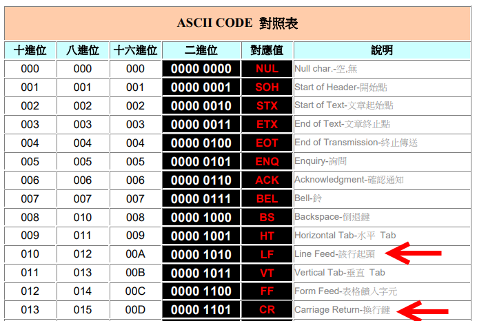
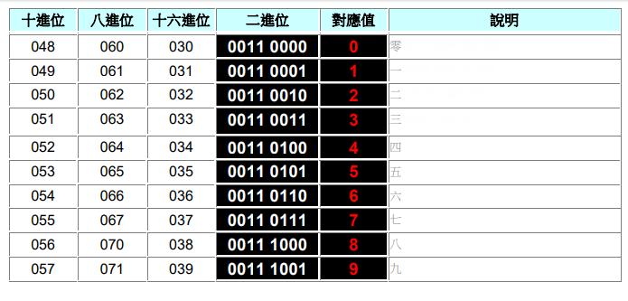 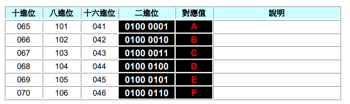 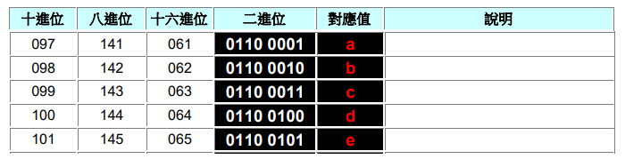 |
|
| PROTOCOLS: UART - I2C - SPI - Serial communications #001(11:57)(YouTube) |
| Serial.write() (Arduino.cc) |
|
| Serial.print() (Arduino.cc) 於Serial Monitor中顯示 印出後不換行 |
| Serial.println() (Arduino.cc) 於Serial Monitor中顯示 印出後換行 |
|
| Serial.write() Writes binary data to the serial port. This data is sent as a byte or series of bytes; to send the characters representing the digits of a number use the Serial.print() function instead. Serial.write(數) : Serial.write(123)--->0111 1011 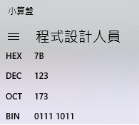 serial monitor 收到後印出 { Serial.print(字) : Serial.print(123)-->'1' ,'2' ,'3' 一共3個Byte 0011 0001 , 0011 0010 , 0011 0011 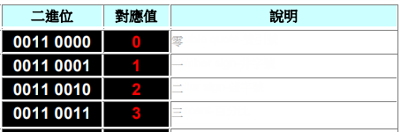 Serial monitor : 一律將收到的binary 轉為ASCII code顯示出來 一律將欲傳送的資料一個一個的轉為binary傳送 為"人"與"電腦"的翻譯者 |
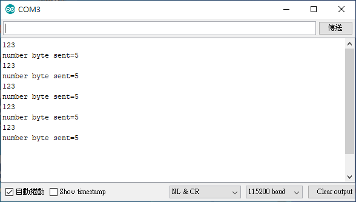 Serial.println(123) 從TX接腳送出5個byte '1'--->00110001 '2'--->00110010 '3'--->00110011 CR--->00001101 LF--->00001010 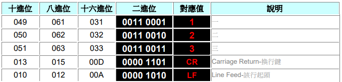 Serial Monitor 由RX接腳收到 00110001轉為 '1' 00110010轉為 '2' 00110011轉為 '3' 印出後,再執行兩個無法顯示之 "控制瑪" 00001101-->CR 00001010-->LF |
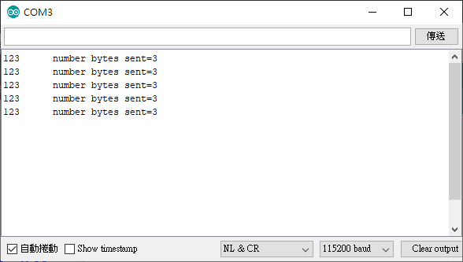 Serial.print(123) 送出 '1','2','3' 之binary 共3個byte, Serial Monitor 收到後 使用ASCII Code 對照表 轉為123
 Serial.print(123,HEX); 將十進位之123轉為十六進位之7B 從TX接腳送出2個byte '7'--->00110111 'B'--->01000010 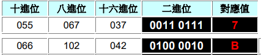 Serial Monitor 由RX接腳收到 00110111 轉為 '7'印出 01000010 轉為 'B'印出
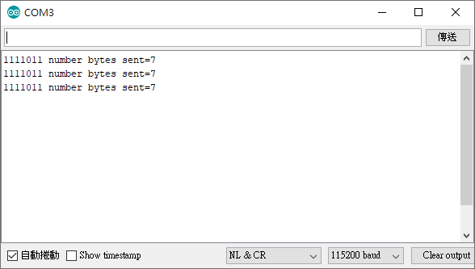
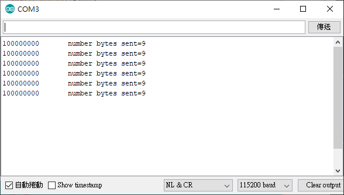 |
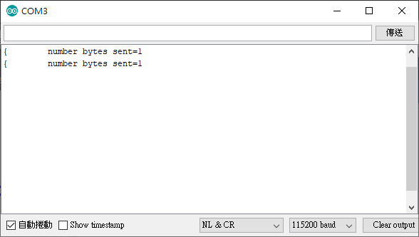 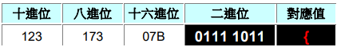 |